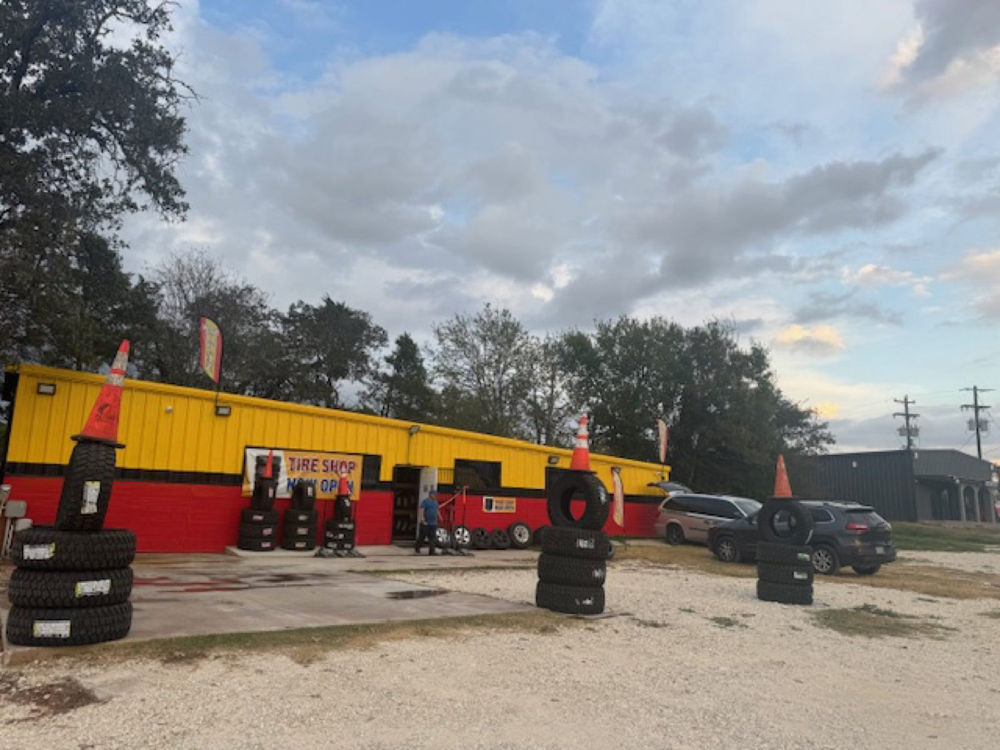

Exit 1
Flat repair
Patch the tire and go. Most flats take minutes.
- Tire patching
- Nail and screw punctures
- Early Sunday service
Tire shop · Cedar Creek, TX
Eric patches flats in minutes. New and used tires, brakes and oil changes on Highway 71.

Services
What's ahead
Tire work first. Brakes and oil changes too. Llantas nuevas y usadas.
Exit 1
Patch the tire and go. Most flats take minutes.
Exit 2
New tires for your car or truck, matched to your vehicle.
Exit 3
Used tires for sale, along with new ones.
Exit 4
A quick oil change while you are here.
Exit 5
Brake service for your car or truck.
Exit 6
We fix tires for car lots across Texas.
Scenic route


Rest area
Look for the yellow building with the red base and the tires stacked out front.
Eric patches tires in minutes, helps you find the right tire for your vehicle and gives a fair quote. He also fixes tires for car lots.

What drivers say
“Eric is the man! I came by early Sunday morning to patch my tire and came out and started working getting my tire off. I was there less than 20 minutes and was on the road again. This place is great. Highly recommend.”
“This is one of the best and most affordable tire shops in Texas. They are a very reputable company and help fix tires for many car lots here in Texas. If you go there they will curate your experience to fit your needs. Eric is extremely hardworking and will fix your tires in minutes! There is no long wait time and he will even help you find the exact tire for your vehicle.”
“Eric gave me a super generous quote, had my tire patched in less than 5 minutes. Best service I’ve ever had”
Find us
1688 State Hwy 71, Cedar Creek, TX 78612
1688 State Highway 71 in Cedar Creek. Park on the gravel lot out front.